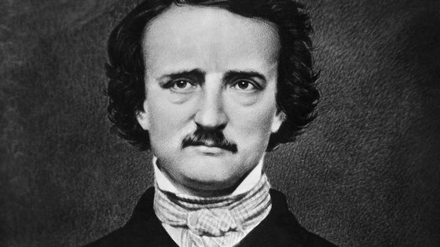

Edgar Allan Poe (1809-1849).
Chỗ này đây, ngay bên trong chiếc cổng sắt đen ngòm của cái nghĩa trang lâu đời nhất của Baltimore, Westminster Church Burying Ground and Catacombs.
Từ phố trông ra đã thấy rõ, ngay bên trái của lối đi lát gạch lổm nhổm lần xuống những rặng cây um tùm đàng sau ngôi nhà thờ cổ, là ngôi mộ uy nghiêm bằng cẩm thạch trắng lạnh lẽo, trên đó người ta đọc được hàng chữ khắc nổi: Edgar Allan Poe (1809-1849).
Dưới đó đã an nghỉ người đã sáng tạo ra thể truyện trinh thám và kinh dị hiện đại. Bà mẹ vợ của ông, Maria Poe Clemm, cũng là người cô, được chôn ngay bên trái mộ ông. Người vợ trẻ của ông, Virginia Clemm Poe, chết sớm vào tuổi 24 nhưng lấy chồng được 11 năm, thì chôn phía bên phải.
Toàn bộ khung cảnh nầy cần được điểm xuyết bằng một con quạ đen to đỗ trên ngôi mộ hay một vài con dơi bay chập choạng dưới tán cây cổ thụ. Một phù thủy hay một hồn ma thực sự hẳn là không cần thiết.
Đối với một nhà nghiên cứu văn học, những người tin vào chuyện ma quái hay thuyết bí truyền, hay những người đi nghỉ thông thường, cuộc đời đầy kinh hoàng và bi thảm của nhà văn vẫn còn lưu lại dấu vết trên nhiều nơi dọc bờ biển phía Đông nước Mỹ.
Ông gắn bó nhất với 4 thành phố: Richmond, Baltimore, Philadelphia và New York và đã từng sống ở Boston, Providence, London, trường đại học Virginia ở Charlotteville, Viện hàn lâm quân sự Mỹ khi còn là một trung sĩ trong quân đội. Nhưng cái nơi cần phải đến thăm nhất chính là ngôi mộ của ông.
Thỉnh thoảng người ta lại thấy một ly rượu và những bó hoa đặt trên hay bên cạnh mộ ông, và chúng luôn luôn có đấy vào dịp sinh nhật ông, ngày 19 tháng Giêng.
Hơn gần nửa thế kỷ qua, vào ngày này một vị khách lạ đội chiếc mũ kiểu cổ, khoác khăn quàng và mặc áo choàng dài, tay chống gậy đã đến đặt lên mộ ông rượu và hoa hồng. Tên tuổi ông được giữ kín, nhưng theo Joff Jerome, người coi sóc ngôi nhà và bảo tàng Edgar Poe ở Baltimore, thì bây giờ đã đổi khác rồi. “Nghi lễ thì vẫn như xưa, nhưng chúng tôi cho là bây giờ việc viếng mộ là do một người trẻ hơn đảm nhiệm: Có thể đó là do một người cha đi kèm với một đứa con trai. Có thể ông bố đã quá già và quá yếu để có thể đến thăm vào một đêm đông hay là ông ta đã chết. Nhưng một người trẻ hơn đã thay ông làm việc đó”.
Là tác giả của Con quạ, Trái tim kể chuyện, Sự chôn cất vội vã, Bọn giết người ở Rue Morgue, Hố giếng và quả lắc và vô vàn những truyện kể làm dựng tóc gáy, Poe là một trong những nhà văn Mỹ được tôn vinh nhất của thế kỷ XIX, đặc biệt sau nội chiến và là một nhà văn lãng mạn và bi lụy không ai sánh kịp của Mỹ.
Ông cũng được các nhà phê bình văn học, các nhà thơ và chủ bút của tạp chí đánh giá cao. Tuy nhiên vào lúc sinh thời, chỉ có một số ít tác phẩm của ông được phổ biến rộng rãi. Đói, lạnh, bệnh tật và cái chết luôn luôn đeo đẳng ông và cái gia đình nhỏ bé lạ kỳ của ông suốt cuộc đời ngắn ngủi của nhà văn. Và cả rượu, thuốc phiện, nợ nần do cờ bạc và cái ám ảnh khát khao muốn tự hủy diệt.
Edgar Poe sinh ra ở Boston năm 1809, con một diễn viên Mỹ gốc Ailen là David Poe và một nữ diễn viên xinh đẹp gốc Anh, Elizabeth Arnold Hopkins. Bà mẹ ông là con người đầy tài năng, nhưng người cha thì lại không thế. Là kẻ nghiện rượu, ông đã bỏ rơi vợ và gia đình sau khi Poe ra đời không bao lâu. Mẹ ông hoạt động trên sâu khấu Richmond khi bà qua đời trong cảnh quẫn bách và lâm bệnh đột ngột, vào tuổi 24 năm 1811. Poe được một người môi giới thuốc lá khá giả ở Richmond, John Allan, nhận làm con nuôi khiến ông có thêm tên đệm Allan và nhận được một nền học vấn quý tộc từ 1815 đến 1820, Poe và gia đình Allan sống ở Anh quốc.
Sau khi trở lại Richmond, Poe đã nặng tình với một phụ nữ trẻ xinh đẹp, gợi cho ông nhớ đến người mẹ quá cố của mình, bà Jane Stith Stanard, nhưng người này chết sau đó không lâu. Thế là bắt đầu một mối duyên nợ có tính định mệnh giữa tình yêu, sắc đẹp và cái chết trong hầu hết mối quan hệ lãng mạn của ông trong tuổi trưởng thành. Bài thơ Gửi Helen ông làm để tặng cho bà.
Poe là một con người điên tàng, ương bướng, đam mê lạc thú, tự hủy hoại, đầy sáng tạo và tính lãng mạn mang chất tâm thần. Giống như cha mình và anh mình chết vì rượu, Poe là dân bợm rượu và thỉnh thoảng còn thăm viếng nàng tiên nâu. Người cha nuôi của ông, mặc dầu là một kẻ mê gái, có nhiều đứa con ngoài hôn nhân, lại là một người nghiêm khắc, chặt chẽ và rất bủn xỉn với người con nuôi. Khi Poe bị bê bối ở trường đại học Virginia vì rượu và nợ nần vì cờ bạc, Allan đã bắt ông thôi học.
Poe bỏ trốn đến Boston tìm cách trở thành nhà thơ nhưng thất bại và tham gia quân đội, phục vụ ở Nam Carolina và pháo đài Monroe ở Virginia, và trong những năm quân ngũ, được thăng lên chức đội. Ông cũng sáng tác một tập thơ nhỏ, Tamerlane và các bài thơ khác, được xuất bản nhưng không có tiếng vang mấy.
Ông xuất ngũ năm 1829, một thời gian sống với bà cô Maria tại ngôi nhà nhỏ của bà ở Baltimore, và vào năm 1830 - với sự giúp đỡ của ông bố nuôi - được nhận vào Học viện quân sự West Point. Nhưng sau đó ông lại bị thải hồi vì nhiều chuyện tai tiếng trong năm đầu. Khi John Allan qua đời ít năm sau đó, ông để lại gia tài cho những đứa con hợp pháp và bất hợp pháp của mình nhưng chả thấy cho đứa con nuôi cầu bơ cầu bất chút gì.
Từ 1831 đến 1835, Poe sống với bà cô Maria và người em họ Virginia ở Baltimore. Họ nghèo đói đến mức Maria và con gái phải đi hành khất. Và thời gian này Poe trở thành người viết văn chuyên nghiệp. Tạp chí Baltimore Saturday Visiter trao ông giải nhất trong cuộc thi viết truyện với tác phẩm Bản thảo tìm thấy trong chiếc lọ. Ông đã bán 5 truyện khác cho tờ Philadelphia Saturday Courier và 4 truyện khác cho tờ Southern Literary Messenger của Richmond, nhưng chẳng qua họ đăng là do lòng thương hại.
Đảm nhận làm trợ lý chủ bút cho tờ Messenger, ông quay về Richmond năm 1835, mang theo bà Maria và cô Virginia. Ông lấy cô em họ vào năm sau khi cô mới 13 tuổi. Một số người cho rằng ông quan tâm đến bà Maria hơn là cô gái Virginia vì bà thay thế cho người mẹ đã mất của ông. Nhưng chắc chắn ông đã có một sự yêu mến mãnh liệt với Virginia và hai người đã thương yêu nhau hết lòng, mặc dù một số học giả đã nghi ngờ về khuynh hướng tình dục của ông.
Năm 1837, ông thôi việc và đưa gia đình đến New York, sống ở Đại lộ thứ 6 và Quãng trường Waverly. Một năm sau ông đến Philadelphia, trở thành trợ lý chủ bút của tờ Gentleman’s Magazine và đây là thời kỳ thịnh đạt nhất trong đời mình. Ông xuất bản một số tác phẩm, gồm Tales of the Grotesque (Truyện kể của Kẻ kỳ cục) và The Prose Romances of Edgar A.Poe (Những truyện lãng mạn bằng văn xuôi của Edgar A.Poe), và trở thành chủ bút tạp chí Graham’s Magazine.
Ông coi New York là đỉnh cao phải đạt tới. Trở lại đấy năm 1844, ông làm việc cho tờ New York Evening Mirror, nơi đăng bài thơ nổi tiếng nhất của ông, The Raven (Con quạ) vào tháng giêng sau đó. Đấy là một thành công lớn tuy tiền nong chẳng được bao nhiêu.
Chuyển sang tờ báo Broadway Journal, ông đã nhanh chóng trở thành chủ bút và chủ báo, nhưng bị khánh kiệt và bỏ tờ báo. Vợ ông, bắt đầu ho ra máu năm 1844 trong khi hát và sức khỏe suy sụp rất nhanh. Bà mất vào ngày 30 tháng Giêng, 1847, trong một căn nhà bé tí lúc bấy giờ ở ngoại ô Bronx, nơi mà một lần nữa họ gần chết đói.
Đau khổ và cô độc một cách tuyệt vọng, Poe sau đó đã tìm cách quên đời trong những cuộc rượu say bí tỉ, và có lần định tự tử. Nhưng ông còn giữ được những thời khắc tỉnh táo và điều độ. Ông kiếm sống bằng viết lách và diễn giảng, và quan hệ với một số phụ nữ, và ít nhất đã cầu hôn hai người trong số họ. Một người nhận lời ông, Sarah Elmira Royster, người yêu thời trẻ của ông, sống ở Richmond. Vẫn tỉnh táo, ông trở về sau khi thăm cô vào ngày 4/10/1849, và rồi người ta tìm thấy ông nằm bất tỉnh trên một đường phố Baltimore bên ngoài một phòng bầu cử và một quán trọ, mặc một bộ đồ của người khác. Ông mất ngày 7/10, năm 40 tuổi.
Bác sĩ Michael Benitez ở Trung tâm y tế của Đại học Maryland mới đây đã công bố những kết quả thẩm định của ông là Poe chết vì căn bệnh dại kéo dài mà không phải do ngộ độc rượu hay dùng thuốc quá liều. Tuy nhiên không ai biết được tại sao ông lại nằm chết nơi đó hay tại sao ông lại mặc bộ quần áo kẻ khác. Bác sĩ Benitez nói: “Tôi thì nghĩ rằng Edgar hẳn sẽ sung sướng khi thấy rằng cái chết của ông vẫn được vây phủ trong sự bí ẩn”. Nhà của Benitez ở gần ngay cái nghĩa địa Westminster.
Ngôi nhà và Bảo tàng Poe là một nơi chật hẹp tù túng làm cho người thăm có cảm giác sống động về những nỗi khốn khó của Poe, Virginia và bà cô Maria. Một số người còn cảm thấy sự hiện diện của hồn ma trong buồng ngủ tối tăm của Virginia.
Người ta đã đào thấy một đống xương dưới nền nhà bếp cách đây mấy năm, nhưng đó không phải là xương người mà là xương súc vật chôn theo rác thải.
Được trang trí bằng những đồ đạc cổ, một số là của Poe, địa điểm Baltimore này rất đáng thăm thú vì những hiểu biết nhiều mặt về Poe của Jerome và những tấm ảnh: Ảnh Poe thời trẻ chưa có bộ ria, ảnh bà mẹ xinh đẹp của ông, bức tranh chân dung duy nhất của Virginia - bức vẽ kỳ lạ nhất, ưu sầu nhất nhưng lại hết sức đáng yêu, được vẽ ngay sau khi cô mất.
Trong những ngày hạnh phúc của mình, Poe sống ở nhiều nơi tại Philadelphia, thời gian ông viết và xuất bản Con Bọ Vàngvà bài thơ Lâu đài Usher trong hoang phế và những tác phẩm khác. Di tích Lịch sử Quốc gia Edgar Allan Poe, ngôi nhà duy nhất mà Poe sống còn sót lại, nay do sở dịch vụ công viên quốc gia quản lý. Ông đã từng sống tại đây với Virginia, bà Maria và con mèo cưng của họ đặt tên là Catterina, từ cuối năm 1842 hay đầu năm 1843 cho đến khi bỏ đến New York năm 1844 trong một quyết định không mấy khôn ngoan. Một căn nhà nhỏ bằng gạch được thuê lại giống như những nơi ở khác của Poe, và bây giờ không còn giữ lại những vật dụng nguyên gốc của nó.
Một căn nhà nhỏ kiểu thôn dã của Poe ở New York, nơi gia đình ông sống trong những lúc tuyệt vọng nhất và nơi mà Virginia qua đời, nằm giữa một hoa viên riêng trong vùng Bronx và đã trở thành một bảo tàng. Tại trường đại học Virginia, những phòng ở của Poe cũng đã được giữ lại nguyên vẹn cho khách tham quan, cũng giống như ở pháo đài Monroe, nơi Poe phục vụ khi mặc áo lính. Đến thăm pháo đài cổ và nhìn lại cuộc sống trong những căn hầm đá tối tăm, khách tham quan hẳn sẽ liên tưởng đến những truyện đầy kinh dị mà Poe đã viết ra.